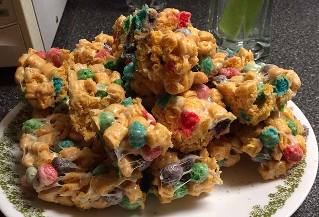

Captain Crunch Casserole

Marshmallow-ey crunchy goodness.
In season 7, episode 23 entitled, "Game of Tones", Fry goes to the past
and sees his family. While there, his mother is making his favorite
dish, "Captain Crunch Casserole." Here is a sweeter take on the dish, in
a style more like a rice krispie treat. Easy to make, and will satisfy
your sweet tooth!
Ingredients
- 3 tablespoons butter
- 1 (10 oz.) package marshmallows
- 6 cups Cap’n Crunch Berries
Instructions
-
In a large saucepan, melt butter, stirring to prevent burning, on
stovetop over low heat. Add marshmallows and stir until completely
melted.
-
Add Cap’n Crunch and stir until well coated. Scoop mixture into
buttered dish or pan.
-
Press into even shape. After cooling, cut into squares and serve.
Recipe found here
Return to top of page